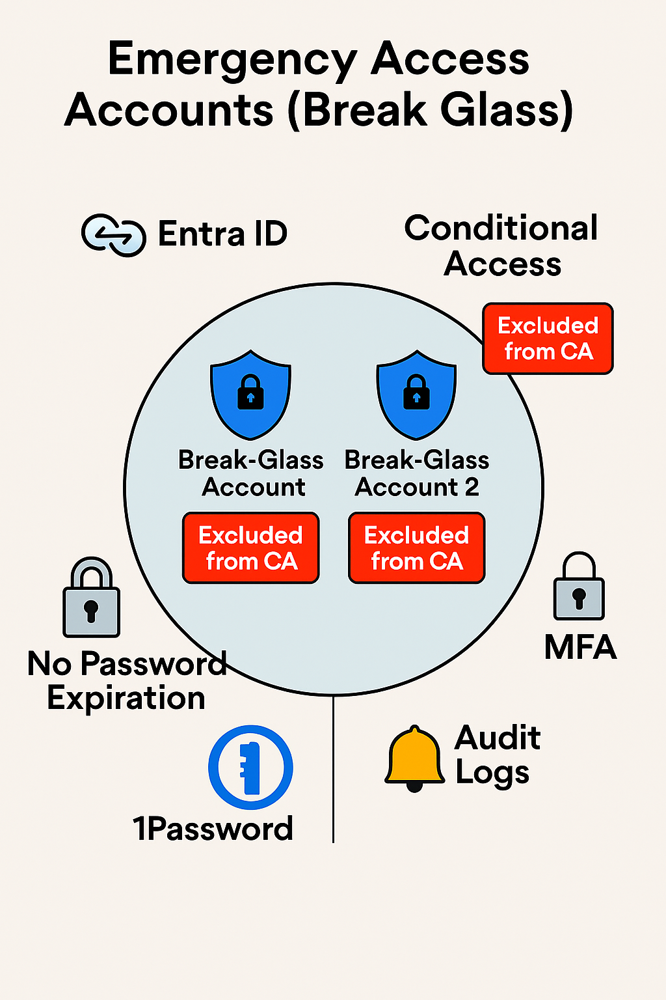

Challenge
In the event of a breach or misconfiguration, the organization risked being locked out of its Microsoft Entra tenant. The goal was to implement secure, policy-compliant emergency access accounts to ensure business continuity and administrative recovery.
Tools & Technologies
- Microsoft Entra Admin Center
- Emergency Access Account Best Practices
- Role-Based Access Control (RBAC)
- Secure Credential Storage (1Password Vault)
- Monitoring & Alerting for Break Glass Usage
Implementation
- Followed Microsoft’s emergency access guidance
- Created two break-glass accounts with Global Administrator roles
- Excluded accounts from Conditional Access and MFA policies
- Stored credentials securely in 1Password Vault with limited access
- Documented access procedures and escalation protocols
- Enabled alerting and auditing for any use of emergency accounts
Architecture Diagram
Impact
- Ensured administrative access during outages, breaches, or misconfigurations
- Aligned with Microsoft’s security best practices for emergency access
- Reduced risk of tenant lockout and improved operational resilience
- Secured credentials with vault-based access control and auditability